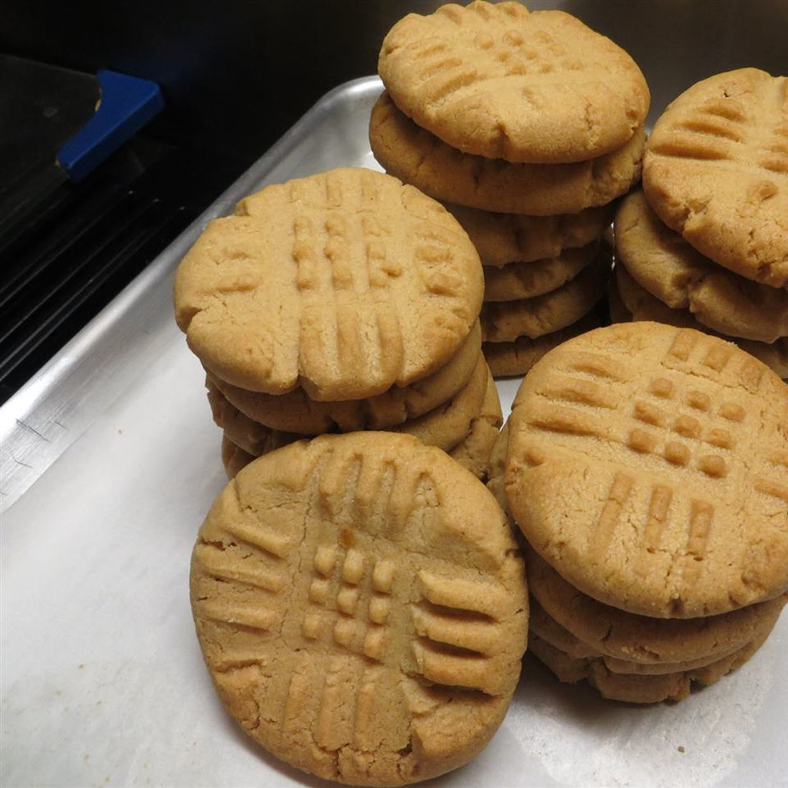

Classic Peanut Butter Cookies

Description
Crisp edges, chewy middles.
Prep: 15 mins Cook: 10 mins Additional: 1 hr
Total: 1 hr 25 mins Servings: 24 Yield: 4 dozen
Ingredients:
- 1 cup unsalted butter
- 1 cup crunchy peanut butter
- 1 cup white sugar
- 1 cup packed brown sugar
- 2 large eggs eggs
- 2 ½ cups all-purpose flour
- 1 teaspoon baking powder
- ½ teaspoon salt
- 1 ½ teaspoons baking soda
Directions
- Cream butter, peanut butter, and sugars together in a bowl; beat in eggs.
- In a separate bowl, sift flour, baking powder, baking soda, and salt;
- Stir into butter mixture. Put dough in refrigerator for 1 hour.
- Roll dough into 1 inch balls and put on baking sheets.
- Flatten each ball with a fork, making a crisscross pattern.
- Bake in a preheated 375 degrees F oven for about 10 minutes or until cookies begin to brown.